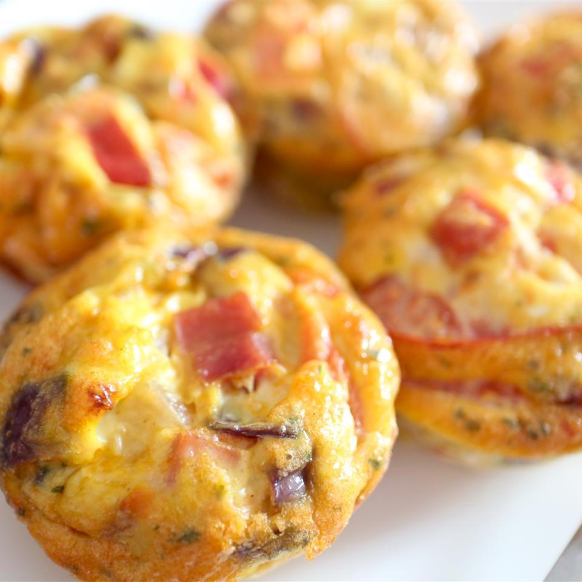

Scrambled Egg Muffins Recipe

These egg muffins are made with lots of sausage and Cheddar cheese and will make a filling and fun treat at your next brunch.
They're pretty, hearty, and fun to serve.
Ingredients
- ½ pound bulk pork sausage
- 12 eggs
- ½ cup chopped onion
- ½ cup chopped green bell pepper, or to taste
- ½ teaspoon salt
- ¼ teaspoon ground black pepper
- ¼ teaspoon garlic powder
- ½ cup shredded Cheddar cheese
Steps
- Preheat the oven to 350 degrees F (175 degrees C). Lightly grease 12 muffin cups or line with paper muffin liners.
- Heat a large skillet over medium-high heat. Stir in sausage and cook until crumbly, evenly browned, and no longer pink, 10 to 15 minutes. Drain off grease.
- Beat eggs in a large bowl. Stir in onion, green pepper, salt, pepper, and garlic powder. Mix in sausage and Cheddar cheese. Spoon into the prepared muffin cups.
- Bake in the preheated oven until a knife inserted near the center comes out clean, 20 to 25 minutes.
Recipe taken from allrecipes.com, this is just an HTML exercise. I didn't create this recipe, but it'll probably cook it because it looks good.